<!DOCTYPE html>
<html lang="ko">
<head>
  <meta charset="utf-8">
  <meta name="viewport" content="width=device-width, initial-scale=1">
  <title>Monocle AI 기능 소개서</title>
  <link rel="stylesheet" href="framework/theme.css">
  <link rel="stylesheet" href="framework/utilities.css">
  <link rel="stylesheet" href="framework/print.css">
  <link rel="stylesheet" href="styles/custom.css">
  <script src="https://cdn.jsdelivr.net/npm/marked/marked.min.js"></script>
  <script type="module" src="framework/monocle-slide.js"></script>
</head>
<body>
  <monocle-slide>
    <script type="text/markdown">
---
title: Monocle AI 기능 소개서
author: Warmblood
---

<div class="flex flex-col items-center justify-center h-full">
  <div class="flex items-center gap-4 mb-8">
    
  </div>
  <h1 class="text-4xl font-bold text-[#2D3436]">Monocle AI 기능 소개서</h1>
  <div class="mt-12">
    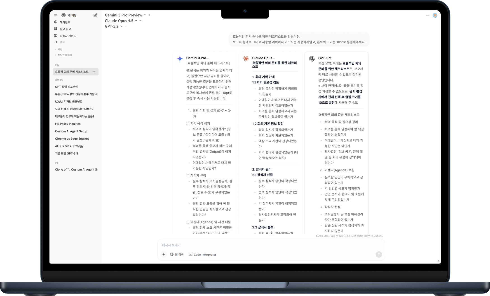
  </div>
</div>

---
layout: slide-default
---

<div class="flex flex-col items-center justify-center h-full">
  <h2 class="toc-title">목차</h2>
  <div class="toc-list">
    <p class="font-bold mb-2">사용자 기능</p>
    <ul>
      <li>멀티 벤더</li>
      <li>멀티 벤더 동시 호출</li>
      <li>프로젝트</li>
      <li>M365 연동</li>
      <li>웹 자료 활용</li>
      <li>파일 첨부</li>
      <li>참고 자료</li>
      <li>커스텀 모델</li>
      <li>크래프트</li>
      <li>이미지 생성</li>
      <li>메모리</li>
    </ul>
  </div>
</div>

---
layout: slide-section
---

<h1 class="section-title">사용자용 기능</h1>

---
layout: slide-feature
heading: 멀티 벤더
subtitle: 한 번의 로그인으로 GPT, Claude, Gemini 등 주요 모델을 업무 목적에 맞게 선택해 사용할 수 있습니다.
---

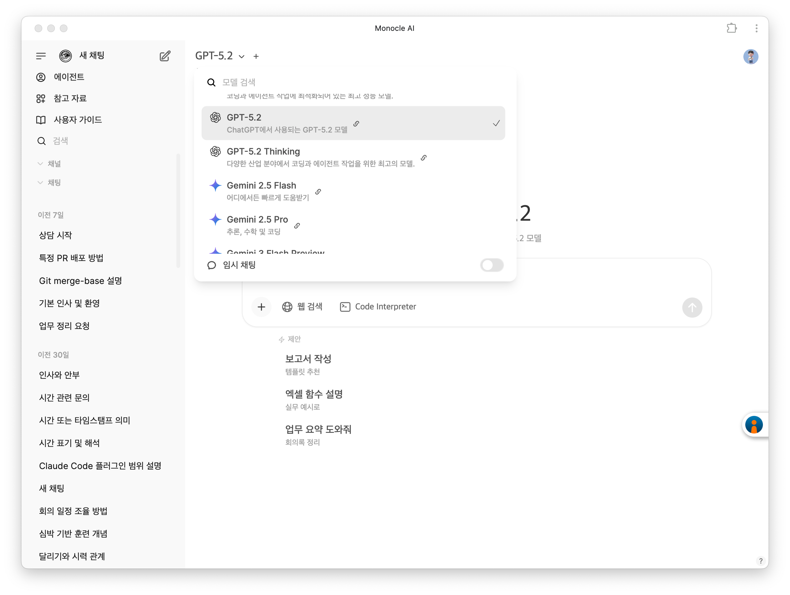

---
layout: slide-feature
heading: 멀티 벤더 동시 호출
subtitle: 같은 질문을 여러 모델에 한 번에 보내, 모델별 답변을 비교하고 가장 적합한 결과를 골라 쓸 수 있습니다.
---

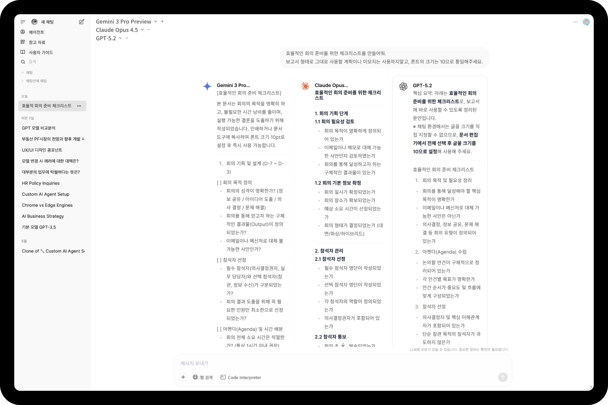

---
layout: slide-feature
heading: 프로젝트 (팀 협업 공간)
subtitle: 팀이 함께 쓰는 채팅·자료·지시문을 한 공간에 모아, 누구나 같은 맥락 위에서 이어 작업할 수 있습니다.
---

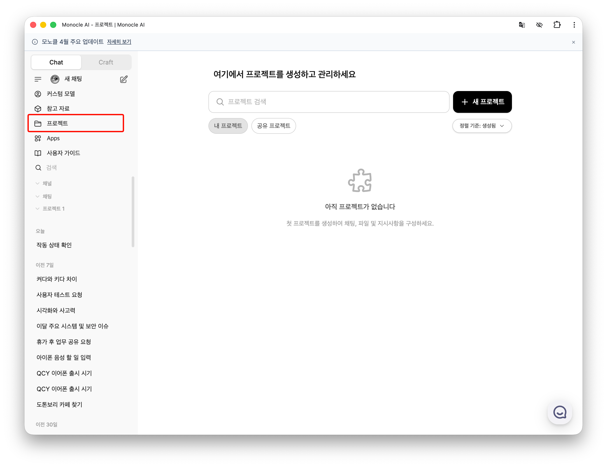

---
layout: slide-feature
heading: M365 (오피스웨어) 연동
subtitle: Outlook 메일, 캘린더, OneDrive·SharePoint 등을 모노클AI 안에서 확인·작성·전송 작업에 활용 가능하도록 합니다.
---

<div class="flex flex-col items-center gap-3">
  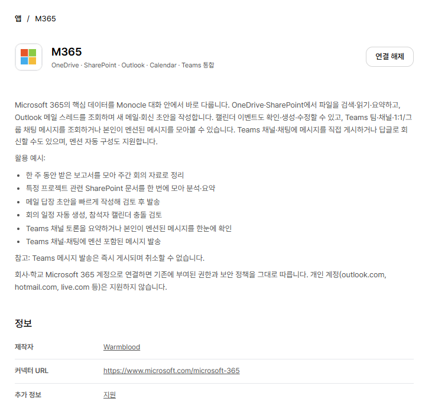
  <div class="flex items-center gap-5 flex-wrap justify-center">
    
    
    
    
    
    
    
    
    
  </div>
  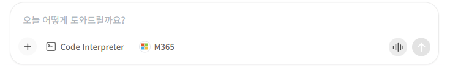
</div>

---
layout: slide-feature
heading: 웹 자료 활용
subtitle: 실시간 웹 검색으로 최신 정보를 찾거나, 특정 URL의 내용을 읽고 답변을 받을 수 있습니다.
---

<div class="screenshots-overlap">
  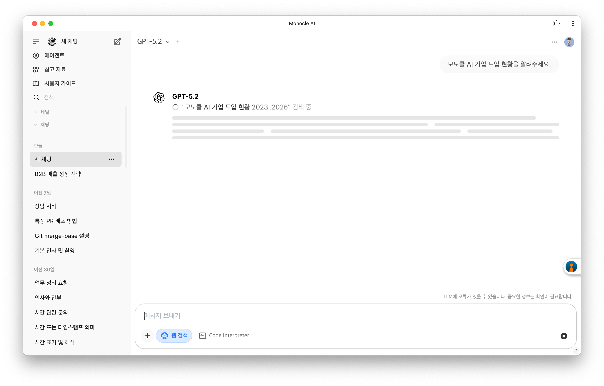
  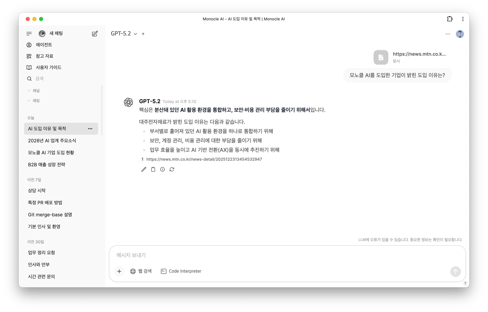
</div>

---
layout: slide-feature
heading: 파일 첨부
subtitle: PDF, WORD, PPT, XLSX, HWP, 이미지 파일을 읽고 답할 수 있습니다.
---

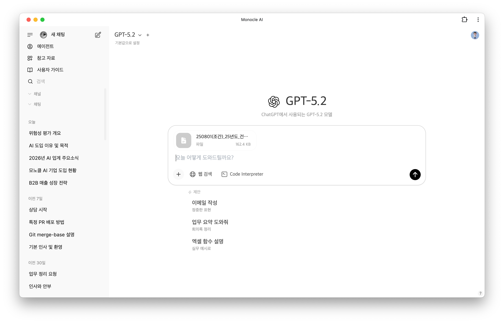

---
layout: slide-feature
heading: 참고 자료
subtitle: 사규·매뉴얼·법령 등 반복 참조하는 자료를 컬렉션으로 등록해두면, 답변마다 자동으로 근거 자료로 활용됩니다.
---

<div class="screenshots-overlap">
  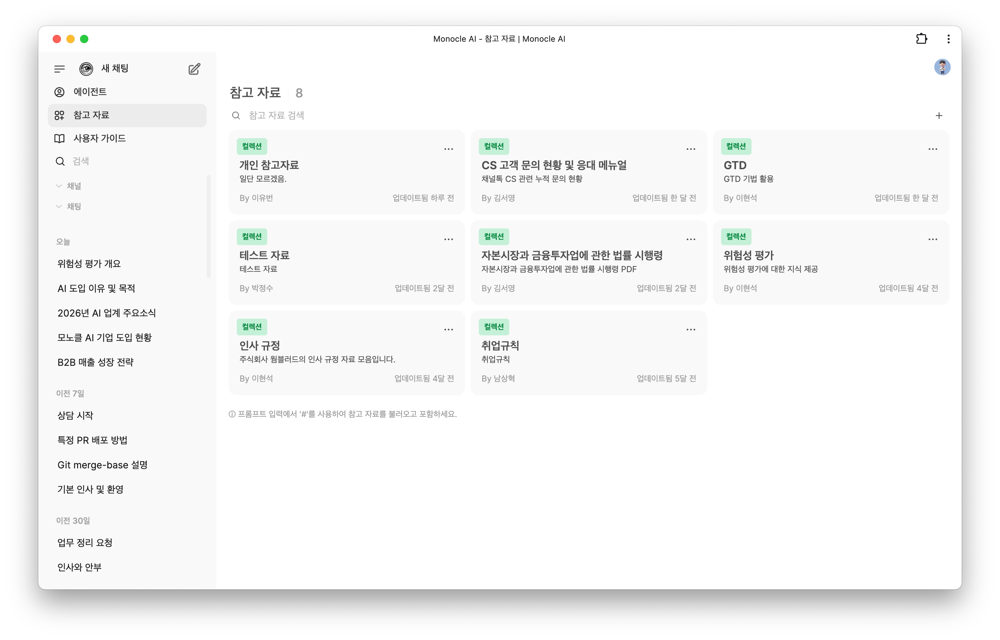
  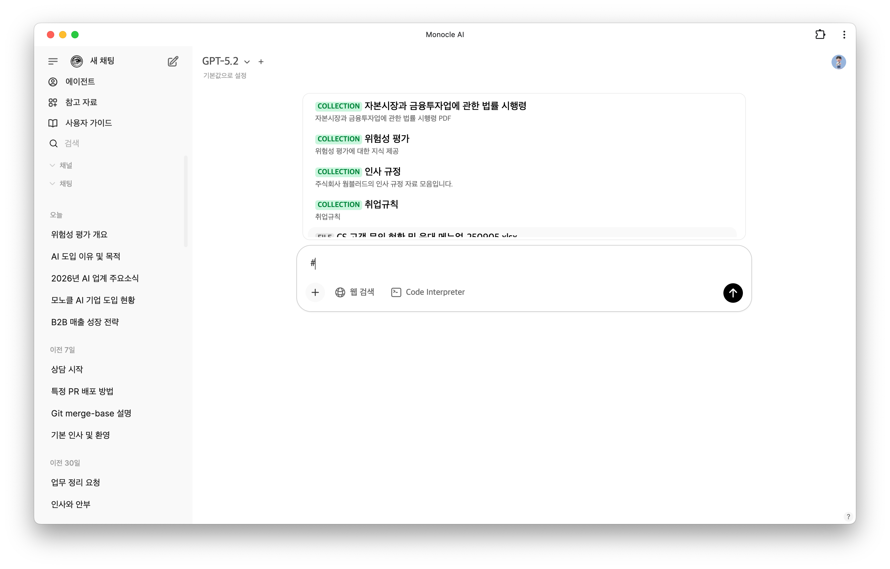
</div>

---
layout: slide-feature
heading: 커스텀 모델
subtitle: 반복 업무에 맞는 지침과 참고 자료를 담은 전용 AI를 만들어, 일정한 품질의 결과를 빠르게 얻고 팀과 공유할 수 있습니다.
---

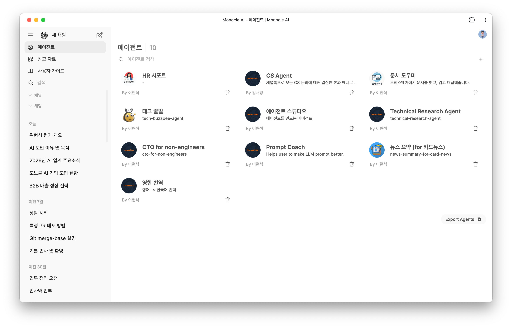

---
layout: slide-feature
heading: 크래프트 (Word·PPT·PDF·Excel 생성)
subtitle: 업무 지시만 입력하면 자료 조사·데이터 정리·문서 작성·이미지 생성까지 이어서 처리해 결과물을 바로 받아볼 수 있습니다.
---

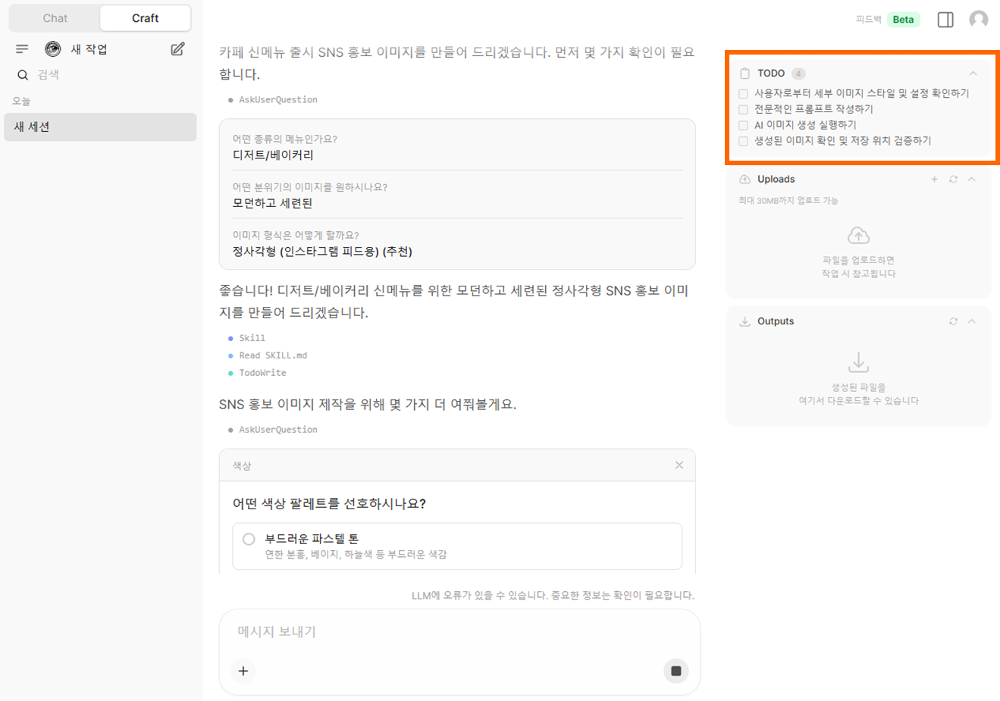

---
layout: slide-feature
heading: 이미지 생성
subtitle: 이미지 모델도 GPT Image·Nano Banana 시리즈를 자유롭게 선택해 사용할 수 있습니다.
---

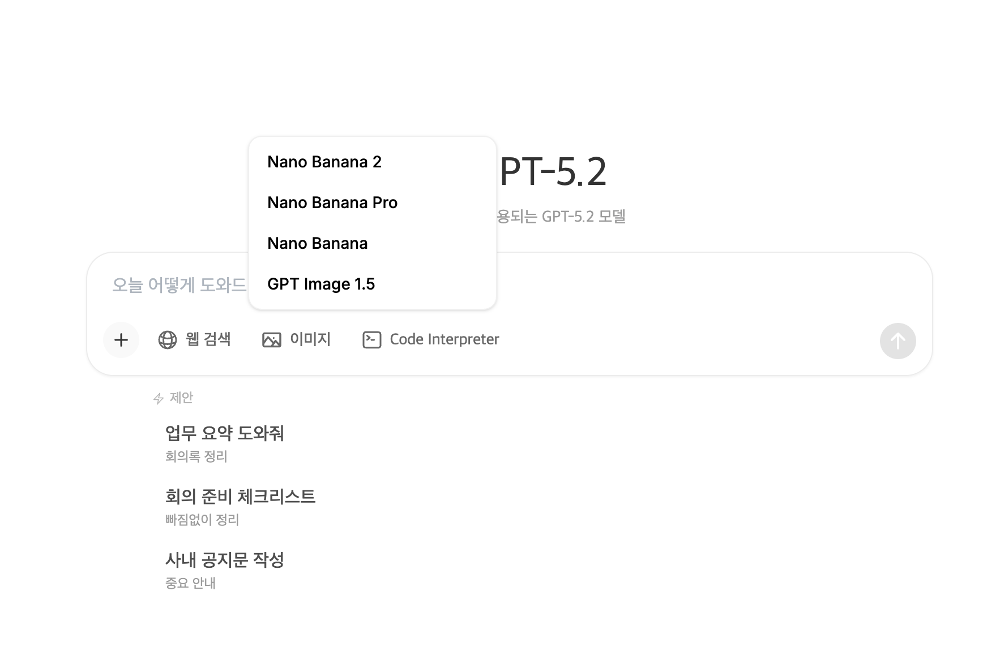

---
layout: slide-feature
heading: 메모리
subtitle: 대화 속에서 사용자의 업무·역할·선호를 기억해두고, 다음 대화에 자동으로 반영해 매번 배경 설명을 반복할 필요가 없습니다.
---

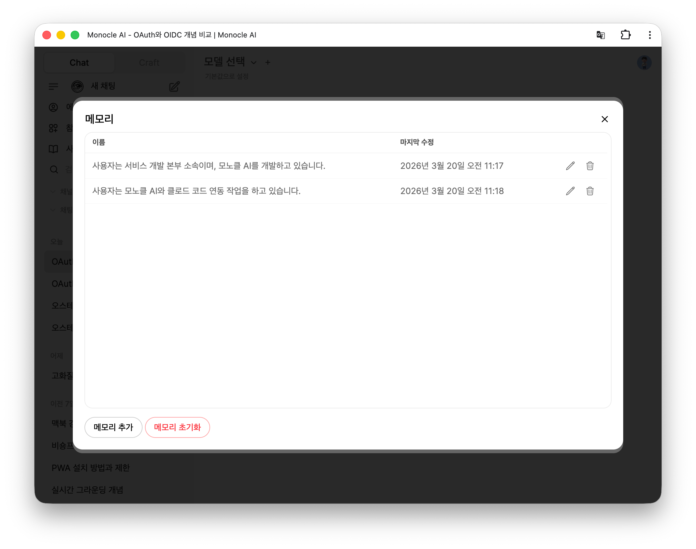

---
layout: slide-contact
---

<h2 class="contact-title">Contact</h2>

<div class="contact-info">
  <p><strong>주식회사 웜블러드</strong></p>
  <p>https://warmblood.kr</p>
  <p>https://monocle-ai.com</p>
  <br />
  <p>support@monocle-ai.com</p>
  <p>02-6015-1708</p>
</div>
    </script>
  </monocle-slide>
</body>
</html>
